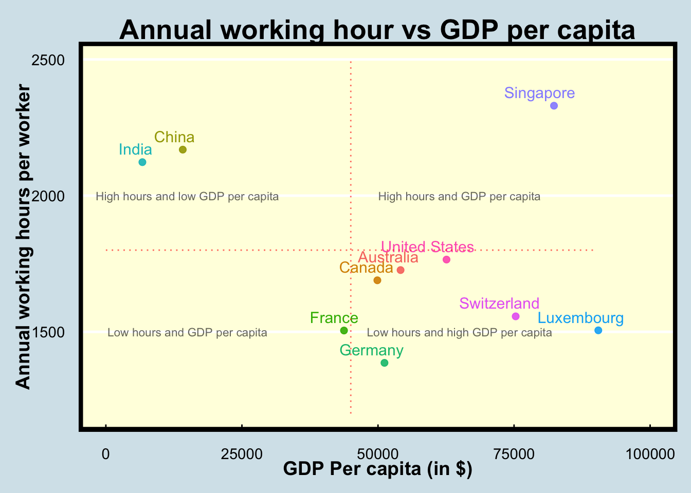
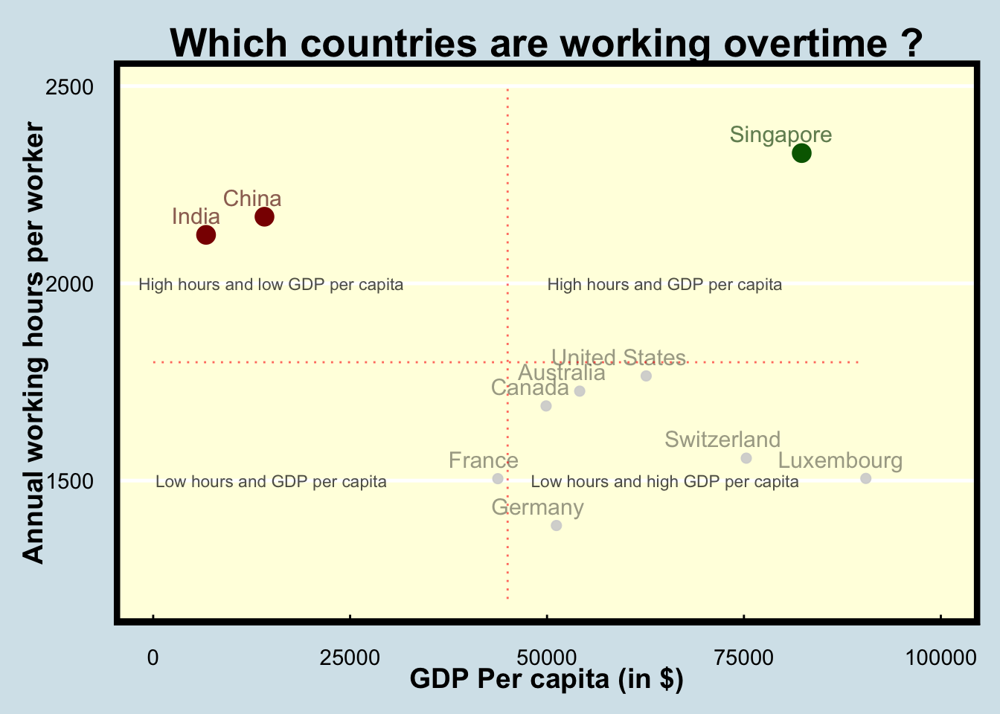
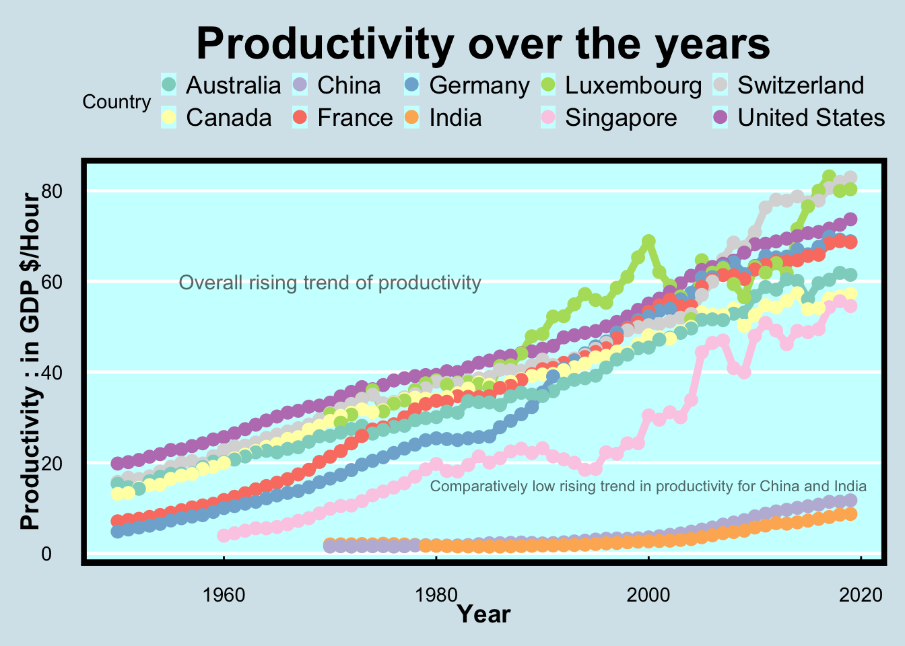

| Variable |
|---|
| Entity |
| Code |
| Year |
| Annual working hours per worker |
| GDP per capita (output, multiple price benchmarks) |
| Population (historical estimates) |
| Continent |
| Productivity: output per hour worked |
1 Introduction
The current dataset contains the annual working hours per worker along with the population estimates of all the reporting countries dating from the start of the calendar year to 2021. The data source has been detailed on the Our World In Data website.
This is an important metric to track as the number of annual working hours is a strong indicator of the labor laws prevalent in the country along with the work-life balance for the various employees. High working hours invariably lead to higher health issues such as stress, anxiety, and depression. With the advent of strict labor laws for the welfare of employees, the current study will dive deeper into how long are employees from various countries and continents working as years have passed on and whether the long hours are indicating strong growth in the economy.
2 What are we looking to answer?
The current study aims to answer some of the following pertinent questions:
- Which countries are reporting the highest annual working hours per employee? How have the annual working hours changed for these countries over time after stricter measures such as the implementation of labor codes in recent decades?
- How are the working hours different for countries with high productive economies (GDP) ? Do the annual working hours vary with population and how do countries with comparable populations such as China and India fare?
- Does working for longer hours directly mean that the productivity output of the economy is higher ?
3 What is this dataset all about?
The current dataset which has been sourced from the Our World In Data website records the average annual working hours, state of economy (in terms of GDP), and population for a particular country over the years. In addition to these variables, the current dataset is merged with another dataset which contains important data on the \({productivity}/{hour}\) for the reporting countries. This measure in effect, tells us about the economic productivity of the country for every hour of work done by an employee (in $/hour).
The above-mentioned dataset can be obtained from the “Our World in Data” website through this link.
Table 1 below shows the various variables present in our dataset.
4 What can we infer from the data ?
In order to answer some of the pertinent research questions, we will need to create visualizations that can help us understand the data better and allow us to draw inferences. The intuitive visualizations are created using the ggplot2 library which is based on the grammar of graphics. The documentation for the ggplot2 library can be referred to in greater detail through this link.
Figure 1 is a scatter plot between the annual working hours and the GDP per capita of some of the nations of concern in the current study.

The annotations in Figure 1 provides us the relevant information, thereby allowing us to obtain important insights while analysing the data.
Information overload
However, when creating a visualisation for a presentation, we are interested to only show the interesting bits to the audience. This not only allows us to concentrate our analysis on the salient data points, but also reduces cognitive load on the part of the audience, as a result of which, they’re able to gauge the information easily, and are constantly following the presenter.
Let us try to tweak our plot to make it more engaging for an audience.

Key takeaway
The high contrast of the data points, namely India, China and Singapore in Figure 2 which are the major outliers and need to be investigated further can be clearly distinguished from the other data points. This allows for the audience to quickly notice these points and follow the presenter’s explanations better.
Another change was the title of the plot to make it more interactive for the audience. While this works better in a presentation mode, plots which are a part of a report would benefit with a general title as observed in Figure 1.
Figure 2 titled “Annual working hour vs GDP per capita” represents a scatter plot with the X-axis containing the variable of GDP Per capita (in $) and the Y-axis containing the variable of Annual working hours per worker. The plot has been created for a list of countries with well-established economies along with some of the manufacturing-based economies like China and India. Below are some of the key points observed that can provide answers to the research questions posed in section 3 :
The scatterplot has been divided into 4 quadrants to facilitate the clustering of the various economies and the quadrants have been explained through the plot annotation. We can observe that the emerging developing nations with comparable populations such as India and China are reporting considerably higher annual working hours than the other major developed economies. This could be a result of the lack of strict labor codes prevalent in these countries leading to highly overworked employees.
Singapore is a developed economy with a very low population. Yet, the annual working hours are reported to be higher than all the developed nations as well as the developing economies of India and China. This could be attributed to the hectic working culture prevalent in the corporates of the country.

Similar to our previous attempts, while Figure 3 provides us with an illustration of rising productivity over time, the plot is too cluttered and is difficult to follow.
Let us simplify this plot further using the same techniques as before.
Key takeaway
Figure 4 titled “Productivity over the years” represents a line chart containing a temporal analysis of the productivity of each of the selected nations from Figure 2. Productivity is defined as the contribution to the GDP (in $) for each hour worked by an employee. The following can be inferred from the plot :
The temporal analysis for productivity (contribution to GDP in $) against the years indicates that there is a steady increase in the contribution towards GDP (in $) for all the countries under consideration. In essence, the temporal trend suggests that over the many decades of study, an hour of work done by an employee yields a higher contribution towards the nation’s economy for every country.
In figure Figure 2, it was established that Singapore, China, and India were the countries with the highest annual working hours. While intuitively, it may be hypothesized that higher working hours would mean greater productivity, however as per figure Figure 4 , it can be observed that the productivity of the economy for these three countries were found to be lower than that of the other economies. Therefore, longer working hours per employee does not necessarily contribute to higher productivity of the economy.
5 Conclusion
The above study explored the various relations between the annual working hours of each country’s economy, its GDP per capita and the contribution towards the productivity of its economy. In order to create a condensed analysis of the major economies, a specific list of countries was curated and its results were visualised through Figure 2 and Figure 4 for inference. The study was observed to draw the following inferences delineated as follows :
Emerging economies based on GDP per capita with similar populations such as China and India which are heavily dependent on their manufacturing industries were observed to have considerably higher annual working hours when compared to developed economies.This could be a result of the leaner labor codes enforced in these countries when compared to the developed economies.
While Singapore is a country with high GDP per capita and low population, it was observed to report higher annual working hours compared to China and India along with all other developed economies under consideration. This could be a result of the work culture in corporations based out of Singapore.
A steady rise in the productivity of each nation under consideration was observed which essentially meant that an employee’s hourly output has been increasing over time.
While Singapore, China, and India reported the highest annual working hours, it’s productivity was observed to be lower than all other developed economies in the current study. This finding demonstrated that higher annual working hours do not necessarily lead to higher productivity in the economy.
6 References
- ggplot2: H. Wickham. ggplot2: Elegant Graphics for Data Analysis. Springer-Verlag New York, 2016.
- tidyverse: Wickham H, Averick M, Bryan J, Chang W, McGowan LD, François R, Grolemund G, Hayes A, Henry L, Hester J, Kuhn M, Pedersen TL, Miller E, Bache SM, Müller K, Ooms J, Robinson D, Seidel DP, Spinu V, Takahashi K, Vaughan D, Wilke C, Woo K, Yutani H (2019). “Welcome to the tidyverse.” Journal of Open Source Software, 4(43), 1686 doi:10.21105/joss.01686 https://doi.org/10.21105/joss.01686.
- plotly : C. Sievert. Interactive Web-Based Data Visualization with R, plotly, and shiny. Chapman and Hall/CRC Florida, 2020.
- kableExtra: Zhu H (2021). kableExtra: Construct Complex Table with ‘kable’ and Pipe Syntax. R package version 1.3.4, https://CRAN.R-project.org/package=kableExtra.
- viridis: Simon Garnier, Noam Ross, Robert Rudis, Antônio P. Camargo, Marco Sciaini, and Cédric Scherer (2023). viridis(Lite) - Colorblind-Friendly Color Maps for R. viridis package version 0.6.4.